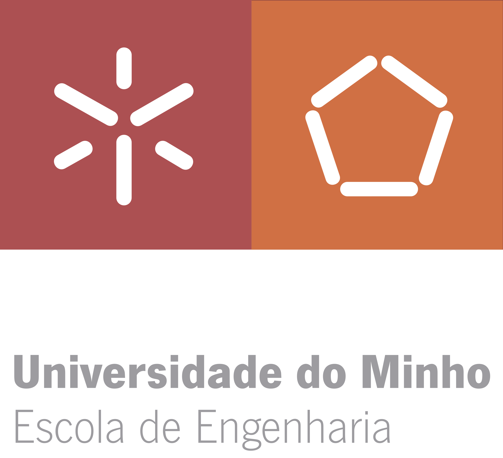
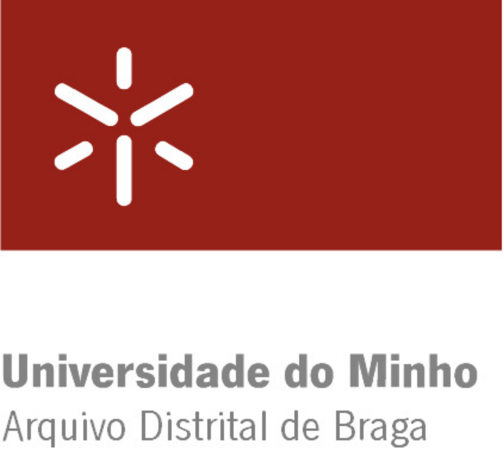
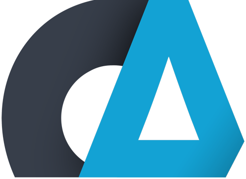
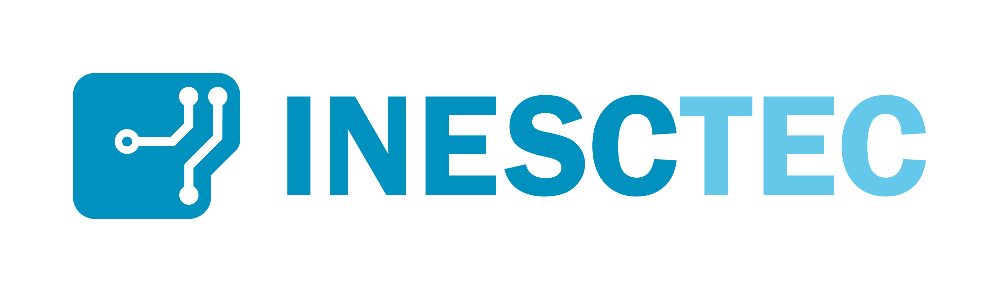

Celebrando cinco décadas de inovação, excelência e transformação tecnológica. Junte-se a nós nesta jornada através de 50 anos de história em Informática na Universidade do Minho.
Accenture

Uphold
Retail Consult
F3M
VisionWare

Checkmarx

INESC TEC
KEEPS

Cachapuz
Eurotux

Kelvin
Ponto 25
Celebrando cinco décadas de inovação, excelência e transformação tecnológica. Junte-se a nós nesta jornada através de 50 anos de história em Informática na Universidade do Minho.
O ensino regular da Informática e sua Engenharia inicia-se na Universidade do Minho no ano lectivo de 1976-77. Pioneiro no país, o novo curso, sob a designação Engenharia de Produção – Ramo Sistemas, incluia no seu plano de estudos disciplinas como Linguagens de Programação, Sistemas de Computação ou Processamento de Dados. O último semestre previa um estágio na indústria de modo a facilitar a integração dos futuros engenheiros no mercado de trabalho.
E foi assim que tudo começou. Quatro anos mais tarde, o curso autonomizava-se na Licenciatura em Engenharia de Sistemas e Informática, a LESI, e, um pouco depois, diversificar-se-ia com a criação da Licenciatura em Matemática e Ciências da Computação, a LMCC. Dois cursos que marcaram decisivamente o desenvolvimento da Informática em Portugal e sucessivas gerações de alunos.

Entretanto, a oferta cresceu e diversificou-se. Alguns ramos, como os Sistemas de Informação, consolidaram-se em novos departamentos, outros autonomizaram-se em novos projectos, como as Comunicações e, mais recentemente, as Ciências de Dados, a Informática Médica, a Inteligência Artificial, a Segurança da Informação ou a Computação de Alto Desempenho. Cursos de fronteira surgiram em diálogo com outros domínios do saber, como a Bioinformática e a Engenharia Física, esta última igualmente pioneira no ensino da computação quântica.
Simultaneamente, uma forte e consistente dimensão de investigação, com elevado nível de internacionalização, veio escudar o vertiginoso desenvolvimento da Informática nesta Casa. Desde o início, também aí, fomos pioneiros: em 1995 o Departamento de Informática organizou a primeira conferência nacional em WWW, alojou a primeira página institucional de Portugal, e daqui saiu a primeira mensagem de e-mail.

O segredo deste sucesso reside na conjugação de três factores: ensino exigente e rigoroso; investigação internacionalmente reconhecida, hoje enquadrada no Algoritmi e no INESC TEC; aposta consistente na inovação, no empreendedorismo e no diálogo com o tecido empresarial.
Este último pilar é constitutivo, desde o início, do código genético da Informática na UMinho. Concretizando o célebre aforismo de E. W. Dijkstra, procuramos levar à indústria não tanto o que ela quer, mas o que de facto precisa. E fazer, em conjunto, esse caminho.
Assim se explica o vibrante ecossistema de inovação que é imagem de marca da Informática na UMinho. Caminho iniciado logo na década de 1970, com a criação da Datamatic, e continuado hoje com empresas fundamentais, em domínios que vão da segurança à sustentação da vida, do processamento de documentos às bases de dados distribuídas, dos agentes inteligentes à engenharia de dados.

Descubra os principais eventos que celebram os 50 anos de excelência em Informática




Clique em qualquer evento para obter mais detalhes. Inscrições e informações adicionais serão disponibilizadas em breve.